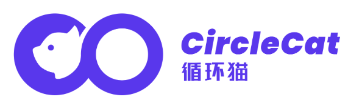

The first execution error is not the whole diagnosis.
- An Online Judge labels a program by the first error it hits. That label is reproducible, but it does not list every fault in the program.
- PyMETA pairs that label with expert repair-path labels for the same programs, so one prediction can be scored against 1 the first outcome, 2 the repair path and 3 the complete set.
- Which model wins, and which biases are visible, change with the target, the number of labels allowed and the scoring rule.
Abstract
Code-diagnosis evaluation depends on how error supervision is constructed and what that supervision treats as a correct diagnosis. We introduce PyMETA, a dataset of 48,646 Python submissions with execution-derived single-error labels, and a targeted subset of 97 submissions annotated by experts through repair and re-execution. Under the first-outcome protocol, four recent prompted models obtain 87.5–93.8% macro F1, all above the strongest finetuned baseline at 80.6%. This reverses the comparison obtained with the earlier set of prompted models.
Read the full abstract
The expert subset gives a less favorable account of complete diagnosis: exact-set match ranges from 43.3% to 48.5%, although sample F1 is approximately 79–81%. The evaluation setup also changes which behavior is visible. On the same 45 audited submissions without an expert-annotated Logic Error, none of the four recent models predicts that label when restricted to one output, whereas 46.7–57.8% include it under multi-error prompting, usually after an explicit-error label. These findings show that model comparisons and error-bias claims depend on what the gold label represents, which outputs the model is allowed to return, and how those outputs are scored.
The benchmark
Python Multi-Error TAxonomy · first-outcome labels for every submission, repair-path labels for a targeted subset
Full dataset · first-outcome labels
Task C label counts over the full dataset (Table 1). Class counts are highly imbalanced, so macro F1 is the primary metric.
Expert subset · repair-path labels
Selection: 40 CodeBERT misclassifications and the 60 highest-entropy predictions on the test set (3 overlap). Because the subset is targeted, it shows how the two targets diverge rather than how often they diverge.
The result is a repair-conditional error set per program: a label may become observable only after an earlier error is repaired.
Labels per Task C class in the 97-item subset (187 labels in total).
Get the data
Hosted on Hugging Face under CC BY-NC 4.0 · code, prompts, annotation guidelines and evaluation scripts on GitHub
Released v2.0 files, split at the question-ID level: no question and no attempt appears in more than one split. All 14 Task C classes occur in the test split. The original random split is kept as revision v1.0.
Each row carries the student code, the problem text and starter code, the reference solution, the raw judge outcome, and the derived labels (all_errortype2 for Tasks B and C, error_category for Task A). Identifiers are anonymised numeric IDs; the data contain no personal information.
from datasets import load_dataset ds = load_dataset("CircleCat/pymeta") # v2.0: question-ID split ds_v1 = load_dataset("CircleCat/pymeta", revision="v1.0") # v1.0: random split LABEL_IDS = {"No error": 0, "LogicError": 1, "SyntaxError": 2, "NameError": 3, "TypeError": 4, "IndentationError": 5, "UnboundLocalError": 6, "KeyError": 7, "IndexError": 8, "EOFError": 9, "RecursionError": 10, "ValueError": 11, "TabError": 12} # anything else -> 13 (Other) def add_labels(ex): c = LABEL_IDS.get(ex["all_errortype2"], 13) return {"task_a": int(c != 0), "task_b": 0 if c == 0 else (1 if c == 1 else 2), "task_c": c} ds = ds.map(add_labels)
- Taxonomy and label IDsDefinitions and counts for all 14 classes and the mapping to Tasks A and B.
TAXONOMY.md - Evaluation scripts and run summariesOne driver for OpenAI, Anthropic, Gemini and DeepSeek; per-run metrics committed under
results_summary/.
scripts/
Findings
Three targets, three research questions
Who wins under the first-outcome protocol?
Target 1 · first outcomeTask C macro F1 (%) on the 4,865-item test set (Table 2). Same gold labels and the same single-error prompt for both sets of prompted models.
Logic Error over-prediction rate, single-error prompt
Share of non-Logic gold instances predicted as Logic Error, macro-averaged over the 13 non-Logic classes (Table 3). The rate remains measurable for recent models but is no longer the dominant failure mode.
Are "wrong" predictions supported along a repair path?
Target 2 · repair pathCoverage of CodeBERT's single-error prediction by the expert repair-conditional set, by predicted label (Figure 1). Name Error is always covered; several rare types never are.
Two recurring failure patternsgold → predicted · all four recent models, single-error prompt
The judge sends one line of input, so the second input() raises EOFError first. All four models name the later input()+1 Type Error.
Off by one on the visible example, so all four say Logic Error. A five-letter hidden test raises Index Error first.
What changes when models may return a set of errors?
Target 3 · complete setMulti-error prompting on the 97-item expert subset (%, Table 4). Macro F1 over the 13 labels with gold support. Highlighted = best per column.
The same 45 audited submissions with no expert-annotated Logic Error (Table 5). Under single-error prompting none of the models predicts Logic Error on these programs; under multi-error prompting they include it in 47–58% of their predictions, almost always after an explicit-error label.
Takeaways for trustworthy code-diagnosis evaluation
Execution-derived labels are reproducible and useful, provided the construct they measure is stated precisely
Reproduce the first outcome?Yes · 87.5–93.8 macro F1 for recent models
Supported along a repair path?About half of the "errors" are
Recover the complete set?Not yet · below 50% exact match
Reproducing the first outcome is not the same as diagnosing the whole program. Say which one the benchmark measures.
Report model identifiers, run dates, prompts and parsing rules. Rankings change across model generations.
Pair execution labels with randomly sampled expert repair audits to estimate how often the two targets diverge.
Report exact-set match beside per-label F1, and check both single- and multi-label outputs before concluding that a bias has disappeared.
Limitations
- The diagnostic subset was selected using CodeBERT errors and prediction entropy. It shows that first-outcome labels can be incomplete, but it cannot estimate how often this happens across the full dataset.
- The subset is small for rare labels. Bootstrap intervals on 97 items do not reliably separate the four recent models.
- Each repair-conditional set depends on the repair the annotator chose. A different fix for an early error could expose different downstream errors. Annotator agreement before adjudication was not recorded.
- The single-error and multi-error settings differ in prompt, output cardinality and scoring rule at the same time, so the comparison does not isolate any one of these factors.
- Data exposure. PyMETA was released publicly before three of the four recent models finished training; only the pinned GPT-5.5 snapshot predates the release.
About CircleCat
The data behind PyMETA come from real learners in a free, volunteer-run software engineering program

CircleCat (循环猫) is a 501(c)(3) non-profit that offers free, accessible software engineering education to Chinese-speaking women: structured coursework from foundations to advanced skills, residencies on real-world open-source and industry projects under one-on-one mentorship, and career support from mentors with industry experience.
为女性中文使用者提供免费的科技行业教育资源。每位毕业生都会帮助新的同学，让课程循环运转下去。
PyMETA is built from the anonymised submission logs of CircleCat's Moodle-based Online Judge, written by 579 learners during ordinary coursework. The 97-item expert subset was annotated by fifteen volunteer researchers and engineers from the community over three rounds.
From Python foundations to advanced skills, with an integrated Online Judge giving immediate feedback.
Students contribute to open-source, non-profit and industry projects with one-on-one mentorship.
Guidance from mentors with industry experience, from building a portfolio to the job search.
A seminar series on engineering practice, research and careers in tech.